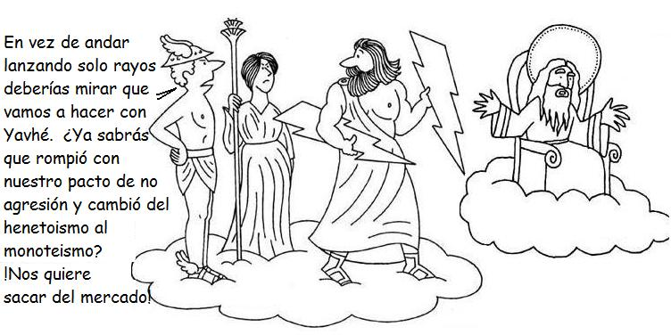

Este artículo ya ha sido publicado en la página de Escépticos Colombia , de la cual Hernán Toro forma parte. [N. de E.]
El “dios judeocristiano” es un término incorrecto. A lo largo de la historia, este vocablo ha representado diversas concepciones teológicas mutuamente excluyentes. Aunque los cristianos modernos muestran sus escrituras como un bloque monoteista estricto, en realidad el dios hebreo primitivo era muy distinto del Dios Padre adorado actualmente por los protestantes, católicos y ortodoxos.
Los hebreos primitivos no creían en un único dios. Su teología no era monoteísta sino henoteísta: creían que existían varios dioses, pero sólo adoraban uno. El motivo era supersticioso: si no adoraban al dios con el que “se aliaban”, éste los aplastaría inmisericordemente. Las evidencias textuales del henoteísmo hebreo inicial son patentes para quienes no se dejan cegar por la “sana hermenéutica” de los mercaderes espirituales modernos.
Así, textos como “Dios se levanta en la reunión de los dioses; en medio de los dioses juzga” 1 presentan a Yahvé como la deidad principal en una asamblea de dioses menores. En la misma línea, y a pesar de los intentos de los traductores modernos para camuflarlo, el primer mandamiento tiene una perspectiva perfectamente henoteísta: “No tendrás dioses ajenos delante de mí” 2. Un Dios todopoderoso e inteligente que hubiera pretendido dar un mensaje monoteísta en vez de uno monolátrico, hubiera dicho algo como: “yo soy el único dios real” o “no existen más dioses que yo”. Pero su mandato real es ser adorado por delante de los demás dioses ajenos que no descarta.
En la misma línea está: “No vayáis detrás de dioses ajenos, de los dioses de los pueblos que están en vuestros contornos, porque Jehová, tu Dios, que está en medio de ti, es un Dios celoso; su furor se inflamaría contra ti y te haría desaparecer de sobre la tierra” 3. Aquí no sólo no enseña la inexistencia de otros dioses, sino que los acepta pero advierte sobre no seguirlos pues Yahvé es celoso y vengativo… actitud divina bastante imbécil esa de sentir celos de seres inexistentes.
La monolatría hebrea primitiva con el tiempo evolucionó en un monoteismo estricto, que consideraba falsos a los demás dioses que otrora reconocía. Esta fase del concepto hebreo de Dios es popular pues es la más publicitada actualmente y hay centenares de textos que la demuestran. Esta Divinidad era todopoderosa: todo ocurría según su deseo; bien y mal eran creados por él. Un residuo textual “fósil” de esta fase teológica se encuentra en un texto de Isaías muchas veces “suavizado” por los traductores modernos: “Que formo la luz y crío las tinieblas, que hago la paz y crío el mal. Yo Jehová que hago todo esto” 4. A partir de esta fase, la religión judía y sus descendientes cristianas e islámicas, han buscado constantemente explicar el bien y el mal en el mundo. Siguiendo los lineamientos básicos de Bart Ehrman 5, las fases siguientes de este proceso explicativo quedaron plasmados en la Torá y la Biblia Cristiana.

Tras sus triunfos militares iniciales con David, el pueblo de Israel creía que una deidad todopoderosa los había elegido como protegidos y los había librado de su esclavitud en Egipto 6. Después de asentarse en la “tierra prometida”, establecieron su reino alrededor del Templo en la época de Salomón, pero con el paso del tiempo, Israel fue víctima de tremendos reveses militares, siendo el Exilio en Babilonia tal vez el mayor de ellos. Al buscar explicación de por qué el pueblo elegido era víctima de sus enemigos, apareció otra fase de desarrollo teológico: el movimiento profético.
En esta ridícula concepción, los males experimentados por Israel eran el resultado de su idolatría: al abandonar la fe verdadera, Yahvé mismo habría enviado castigos para regresar a su pueblo por el camino recto. A esta mentalidad, poco importaba que niños inocentes fueran estrellados contra el piso, que mujeres embarazadas fueran asesinadas haciéndolas abortar a punta de espada, que bebés de pecho murieran de inanición y sed, y que mujeres justas del pueblo idólatra terminaran cocinando y comiéndose sus propios hijos 7… la “bondad” de Yahvé era incuestionable, pues lo que a primera vista “parecían” actos abominables enviados por un demonio celeste aborrecible e injusto, en realidad eran “Justicia Divina” para corregir la idolatría de su pueblo.
Luego de la deportación, los hebreos comenzaron a experimentar otro tipo de mal: adversidades terribles debidas a su observancia de la Ley de Dios. Por ejemplo, dos siglos antes del nacimiento de Jesús, el gobernador Sirio de Palestina persiguió a los hebreos por seguir la Ley de Yahvé. ¿Cómo era posible entonces que siguieran sufriendo, si cumplían con su parte del pacto, y si Dios había prometido bendiciones por ello? La respuesta por primera vez fue medianamente inteligente y dio origen a una nueva fase teológica: el movimiento Sapiencial. En éste se reconoció que el mal del mundo no siempre era un castigo sino que era inherente a la existencia: los ricos abusaban de los pobres, los ejércitos extranjeros aniquilaban pueblos, la adversidad diezmaba sin contemplaciones.
¿Pero cómo se podía entender esto si Yahvé era bueno? La respuesta aún subsiste en nuestra cultura: el mundo estaba en guerra debido a un ser malvado, opositor a Yahvé: Satán. Esto limpió la faceta negativa de Dios como creador de la maldad pero puso un nuevo aprieto teológico: ¿Cómo podría ser que Dios permitiera estos males si era justo? La respuesta fue una evasiva desesperada: seguro la situación injusta de ese entonces no iba a durar para siempre… Yahvé intervendría muy, muy pronto para acabar para siempre el mal y restaurar la perfección en la Creación, arruinada por el Opositor.
Ese fue el origen del pensamiento apocalíptico, del cual Jesús de Nazaret fue el exponente más famoso. De las pocas predicciones atribuibles con seguridad a él, están los pequeños apocalipsis sinópticos en los que pronosticó fallidamente un fin inmediato. Pablo hizo eco a estas ideas apocalípticas del Nazareno y garantizó incluso en “Palabra de Dios” que él no moriría antes del fin 8.
Es claro que el fin inminente no llegó, y que el falso profeta de Nazaret y su émulo de Tarso estaban equivocados. Entonces… ¿cómo se podría interpretar esto? ¿Por qué el buen Dios no arreglaba su creación perfecta? Una actitud fue la que siguió el cristianismo actual: estableció Iglesias, mantuvo su adoración, deificó a Jesús, y siguió creyendo que algún día llegará el Reino de Dios, así sea post-mortem.
La otra respuesta fue sorprendente y brillante: Tal vez Yahvé no era un dios bueno y perfecto; tal vez era inepto, indiferente o malo. Si se juzga un árbol según sus frutos, ¿cómo se podría juzgar al creador de un mundo repleto de sufrimiento y de mal? La respuesta de la última fase judeocristiana fue la aceptación de un universo inherente malo, creación de un dios inferior, un “demiurgo” incompetente, y que por primera vez en la historia, el verdadero Dios Supremo, Trascendente e Inefable, se había comunicado con los hombres por medio de Jesús para despertar en ellos la consciencia de su naturaleza real.
Al reconocer que éramos chispas divinas del Dios Supremo, y que estábamos atrapados en un mundo denso, imperfecto, el hombre se liberaría y se salvaría a sí mismo. Este fue el surgimiento del gnosticismo cristiano: una respuesta radical ante el fracaso estrepitoso de la apocalíptica, y el anquilosamiento mediocre de las corrientes cristianas paulinas.
El Gnosticismo Cristiano, valga la aclaración, no tiene absolutamente nada que ver con la farsa ridícula inventada por Víctor Manuel Gómez Rodríguez (alias “Samael Aun Weor”), conocida como “Iglesia Gnóstica Universal Cristiana de Colombia”; ésta es sólo una mezcla amorfa y absurda de cultos de nueva era. El verdadero Gnosticismo Cristiano se conoce ahora muy bien gracias a los textos descubiertos cerca de la población egipcia de Nag Hammadi, en 1945. Es una serie de códices 9 escritos en copto 10 copiados cerca al 320 EC, que después de Qumrán, es el hallazgo arqueológico más importante del siglo XX. Esta biblioteca incluía entre otros textos paganos, judíos, y cristianos, apócrifos tan importantes como El Evangelio de Tomás y el de Felipe. Cualquier lector interesado en aprender más sobre estos libros puede remitirse a unas excelentes traducciones disponibles 11.
A partir de este punto, las especulaciones gnósticas comenzaron a generarse a ritmo creciente: incorporando elementos del platonismo medio, retornando en ocasiones a elementos de sus raíces judías, y con elucubraciones febriles, los gnósticos empezaron a tratar de justificar la imposible Teodicea: cómo a partir de un ser inefable y perfecto, pudo surgir el mal del mundo. Las respuestas con diversos matices, van en la línea de señalar la perfección de las cualidades divinas: por su perfección estas cualidades deberían tener existencia por sí mismas, y emanarían desde la Divinidad Inefable. A estas emanaciones se las llamaba “Eones”; entre ellos se encontraban el Silencio de Dios, la Soledad y la Sabiduría Divina (Sofía).
Al parecer, tras la emanación inicial del Pleroma (conjunto de todos los eones divinos) se habría producido una catástrofe que en algunas ramas del gnosticismo, se debían al anhelo de algún Eón (a veces Logos, a veces Sabiduría) de conocer antes de tiempo la Naturaleza Divina. Este anhelo justo y bueno, pero en un momento erróneo, hizo que el Eón saliera del Pleroma a la manera de una especie de Pecado Original. Sería este Eón caído el que después de complejas interacciones habría creado la materia y el cosmos. Este Eón, en algunas corrientes gnósticas, sería identificado con el imperfecto Demiurgo o creador del Universo, y se igualaría al dios inferior, incompetente y necio de las escrituras Judías.
La parte final de esta historia es bien conocida: a punta de sangre y fuego, las facciones cristianas originales lucharon por posicionarse, y la versión triunfadora del mito declaró “hereje” a las versiones restantes (la historia la escriben los triunfadores), los gnósticos terminaron exterminados en la hoguera por sus “amorosos “hermanos cristianos a lo largo de todo el medioevo. La promesa de Jesús de un reino de Dios con justicia, paz, amor, y bienestar para toda la humanidad, se transformó por arte de birlibirloque en una Institución Eclesial policiva, que seguiría eternamente, en un mundo cada vez más podrido, injusto e inhumano. Y la venida inminente del Reino que se daría en el Siglo I, siguió demorándose durante dos mil años, y seguirá atrasándose “per secula seculorum”. Por último, de la versión Paulina del Cristianismo, emanaron todo tipo de troncos (catolicismo, ortodoxia y protestantismo) y centenares de ramas secundarias, cada una de ellas con la única religión verdadera y únicas herederas de la fe en el demonio henoteísta de los hebreos primitivos.
El análisis histórico lo muestra claramente: De un dios entre todo un panteón, a un monoteísmo con una divinidad caprichosa y sanguinaria, pasando por un dios en lucha con un antidios, para terminar en una deidad incompetente creadora de un mundo imperfecto contrapuesta a un Dios inefable que se comunicó con la humanidad por primera vez a través de Jesús, el concepto judeocristiano de Dios no es el de un padre amoroso de la humanidad que se haya revelado gradualmente a sus hijos según cierta “economía de la Salvación” enrevesada y tonta… Es sólo un mito supersticioso previo a la edad del bronce que se ha modificado y amoldado gradualmente al avance cultural de las sociedades que lo han idolatrado, justo como una especie biológica se adapta evolutivamente a los cambios ambientales.
La historia del desarrollo teológico judeocristiano es una muestra más de que ese concepto de dios es un mito que solo existe en las cabezas de quienes doblegan su razón ante fábulas prehistóricas.
Notas:
- 1
-
Salmo 82,1
- 2
-
Éxodo 20,3
- 3
-
Deuteronomio 6,14-15
- 4
-
Isaías 45,7 (RVA)
- 5
-
Ehrman, Bart. Cristianismos Perdidos: los credos proscritos del Nuevo Testamento. Ares y Mares, 2004. p 176ss.
- 6
-
La leyenda de la Liberación de Egipto está seriamente reevaluada como mito fundacional por la total carencia de evidencia arqueológica y los tremendos anacronismos históricos del relato, como propone: Finkelstein, Israel y Silberman, Neil. La Biblia Desenterrada: una nueva visión arqueológica del antiguo Israel y de los orígenes de sus textos sagrados, Siglo XXI de España, 2003. Se puede encontrar una reseña en el artículo titulado “La arqueología bíblica indica que el Éxodo no existió”
- 7
-
Véase un ejemplo de estas barbaries en: Oseas 13,16; Deuteronomio 28,54-58, y compárese éste con Lamentaciones 4,10-11.
- 8
-
Esto se trata en “Las falsas profecías de la Biblia”, en: http://www.escepticoscolombia.org/detalleContenido.php?id=articulo_falsasProfecias
- 9
-
Los códices eran escritos en hojas de papiro, encuadernados en forma de libro, y mucho más cómodos que los aparatosos e ineficientes rollos de pergamino.
- 10
-
El copto es cualquier dialecto egipcio transcrito en caracteres griegos.
- 11
-
Piñero, Antonio, Montserrat Torrents, José y García, Bazán, Francisco. Textos gnósticos: Biblioteca de Nag Hammadi I, II y III. Trotta, 1997. El tomo I tiene una excelente introducción sobre los sistemas de creencias de la comunidad gnóstica de Nag Hammadi.
Volver a la sección Examinando las religiones
Comentarios
Comments powered by Disqus